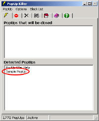

| Adding PopUps |
In order for PopUp Killer to close PopUps, you must add the PopUp's to the PopUps that will be closed list (aka. Black List).
Let's make this simple exercise:
Now, you should see the two windows listed in the Available PopUp's Monitor display, as shown in this image.
- Make sure PopUp Killer is running, enabled and the Smart! option is disabled.
(You must turn off the Smart! option for this exercise to work properly)
(If you're not connected to the Internet, make sure the Direct Connection option is enabled)- Click the here. A sample PopUp will appear.
- Double click PUK's icon to open the main window.
To add the PopUp to the black list, simply identify its name "Sample PopUp" in the Detected PopUps list and double click it.
PopUp Killer will add it to the Selected PopUp's display and close it instantly.
NOTE: If you can't see the "Sample PopUp" label on the Detected PopUps list it may be because you're using a customized version of Internet Explorer.
In this case, go to the Preferences dialog (Options->Preferences...) and click on the Detection tab.
Check the option "Custom Internet Explorer Title" and type the text that appears on your Internet Explorer's title bar, right after the "-". You may try to use the "Default" button to retrieve this text. If that doesn't work, enter it manually.Now, every time you click the sample above or any other link which displays the same PopUp, PUK will... kill it!
Now, let's try this:
- Remove the PopUp from the Selected PopUp's display (Click here to learn how).
- Enable the Smart! option.
- Click on the above sample again.
Cool! PopUp Killer used its smart code to detect the presence of a PopUp and even when you never had it in the black list, PUK was able to determine that this was another annoying PopUp and it simply kill it!
Note that the Smart! option will not always be able to detect all the PopUp's. For those PopUp's that the Smart! option can't detect, simply add them to the black list as shown in the exercise above.
A new slider has been added to control how sensitive the Smart! option should be. Click here for more information.
Types of PopUps
In PopUp Killer there're three types of PopUps:
- The popups listed in the PopUps that will be closed list. These popups can be enabled or disabled. For more information click here.
- The popups listed in the PopUps that will be closed list that use wildcards. Wildcards are used to specify a set of popups with just one or two words.
Let's say you would like to have PopUp Killer close every popup that starts with the words FREE. So, all you have to do is select from the menu PopUp->Add... and enter the word FREE followed by the * character, like this: FREE*- The popups listed in the Popups that will not be closed list. These popups will not be closed by PopUp Killer. Sometimes, there're popups that you want to see because offer some kind of useful information. To add a popup to this list:
- Simply select from the menu PopUp->Add... type its name and select the "Add to exclude list" option.
- You can also rightclick a detected popup's title and select PopUp->Add...
- Another way is by rightclicking a popup's title from the black list and select Exclude.